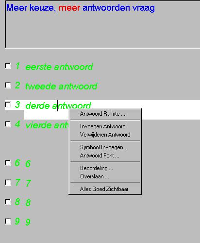

Meerkeuze, MeerAntwoorden Vraag
Onderstaand plaatje geeft een goed overzicht van de belangrijkste eigenschappen:

Hiermee wordt de hoogte van de antwoorden ingesteld. De antwoorden zijn tegen elkaar aan geplaatst, zodat alle ruimte benut kan worden om de teksten te positioneren. De minimale hoogte is 20 pixels.
Invoegen / Verwijderen van een Antwoord 
Bij het verwijderen van een antwoord worden alle volgende antwoorden 1 plaats naar boven opgeschoven en wordt aan het einde een leeg antwoord toegevoegd. Bij het invoegen wordt op de aangegeven plaats een leeg antwoord ingevoegd en worden alle antwoorden inclusief het geselecteerde 1 plaats naar beneden opgeschoven. Het opschuiven vindt altijd plaats over het maximaal aantal mogelijke antwoorden (19). Is bijvoorbeeld door het invoegen van een antwoord, het laatste antwoord van het scherm verdwenen, dan kan dit meestal worden teruggehaald door de antwoordhoogte te verkleinen.
Werkwijze invoegen/verwijderen antwoord:
1. Selekteer het gewenste antwoord (muisklik of PageUp / PageDown)
2. Klik met de rechtermuis-toets op het geselecteerde antwoord
3. Kies Invoegen / Verwijderen (Verwijderen vraagt om een extra bevestiging)
Het letterfont van de antwoorden kan worden gewijzigd met behulp van de rechter-muistoets. Voor het lettertype van de vraag wordt altijd het font van de gehele vragenlijst gebruikt.
1. Selekteer een willekeurig antwoord (muisklik of PageUp / PageDown)
2. Klik met de rechter-muistoets op het geselecteerde antwoord
3. Kies 'Antwoord Font ...'
Nu verschijnt een dialoog venster waarin een font en de bijbehorende eigenschappen kunnen worden geselekteerd
4. Selekteer gewenste font en de bijbehorende eigenschappen
Nu zal het gewenste font geactiveerd worden
© Copyright Instrumentele Dienst, 1999-2004